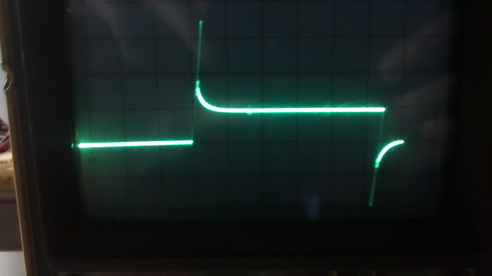
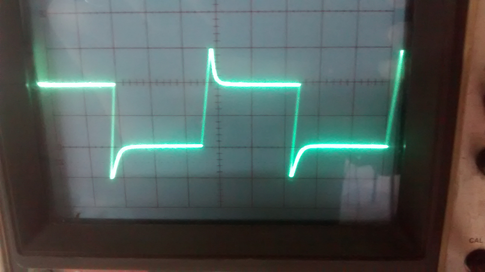
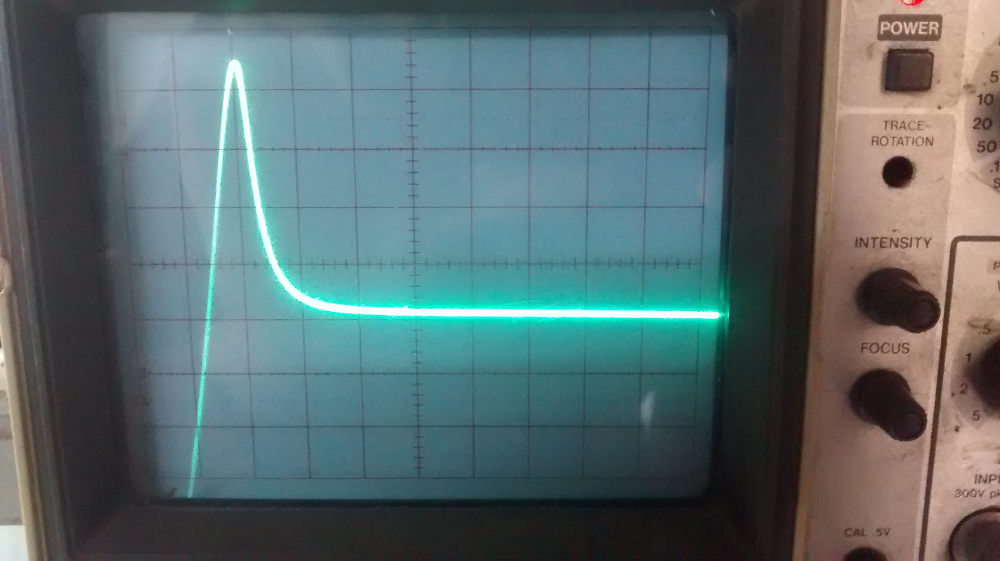
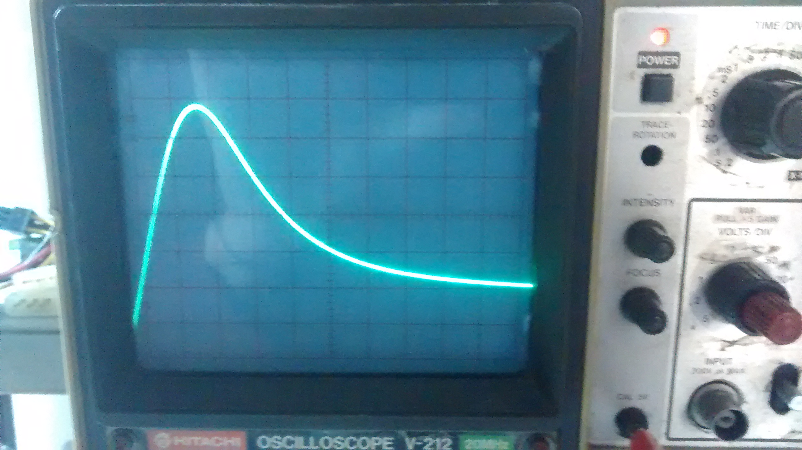
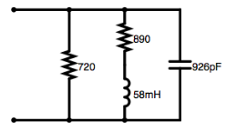
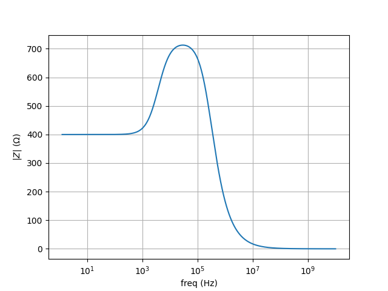
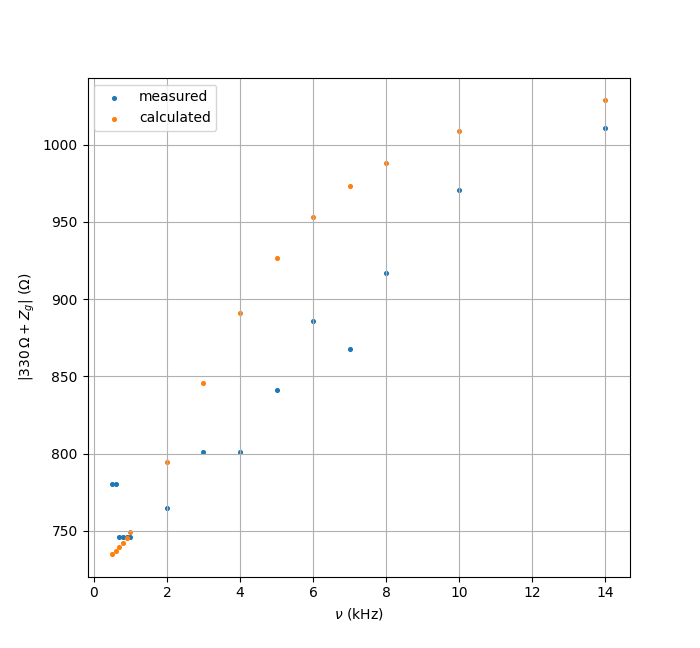

For us to be able to fine tune the controller, we need to know more about the system we're trying to control in the first place.
The galvanometer coil DC resistance had been measured to be 400 Ω. But it could be useful to know its inductance too. This was my first choice of measurement since it seemed to be pretty easy, and for some reason I expected it to be significant. Ultimately though the opposite was the case; it took me a while to get it right (pretty frustrating), and the corrections obtained are negligible for our purposes.
First I regarded the coil as a resistance $R$ in series with an inductance $L$. The value of $R$ we knew to be 400 Ω from DC measurements. If we placed the coil in series with a known test resistance $R_{\rm test}$, then at frequency $\nu$, we'd have $$ |Z|^2 = (R+R_{\rm test})^2 + (2\pi\nu L)^2 $$ where $Z$ is the impedance of the whole circuit. If the circuit is driven by a voltage $V$ at frequency $\nu$, and $V_{\rm test}$ is the voltage across the test resistor, then $$ |Z| = \frac{|V|}{|I|} = \frac{|V|}{|V_{\rm test}|}R_{\rm test} $$ This was appropriate because only one channel in the oscilloscope was working, and so we could not measure phase, only magnitude. To measure $L$ then, drive the circuit with a sinusoid of known amplitude $|V|$ and frequency $\nu$, measure $|V_{\rm test}|$, and use the two equations.
Here are the results of one battery of such tests:
(Rtest = 330 Ω) ν |Z| L -------------------- .5 780 87.5 .6 " 72.9 .7 746 34.9 .8 " 30.6 .9 " 27.2 1 " 24.5 2 765 18.2 3 801 17.5 4 " 13.1 5 841 13.3 6 886 13.3 7 868 10.7 8 917 11.0 10 971 10.2 14 1011 7.6 -------------------- kHz Ω mH
Clearly something's wrong. I performed several such measurements, with frequencies ranging from 100s of Hz to a few MHz, with different values for $R_{\rm test}$, and later then even other circuit arrangements, until I gave up on this "series RL" model for the coil. I briefly considered other coil models (one with a parallel capacitor to account for winding capacitance for example), but then I realized we didn't really need any model; we could just regard the coil as an "abstract" 2nd order system. And, even more importantly, we just had to measure its step response to deduce all its properties.
|  |  |
|  |  |
Now I placed the coil in series with a 10 kΩ resistor, applied a 500 mV step to the circuit, and measured the voltage across the coil; the result is the picture in the top left. I didn't like it that much, and so I added a 10 nF cap in parallel with the coil to make things smoother, resulting in the remaining three pictures.
From the knowledge that the height of the step is 500 mV × 400 Ω 10400 Ω = 500 mV / 26 = 19.23 mV, and that in the last (bottom right) picture there is 10 μs per horizontal division, we find the following expression for the voltage $y$ across the coil as a function of time: $$ y(t) = 19.23\,{\rm mV} \cdot (1 + 1.26 \cdot e^{-t\cdot 30\,{\rm kHz}}-2.26 e^{-t\cdot122\,{\rm kHz}}) $$ This expression can be found for example by looking at the coordinates of the critical point $\dot y=0$. Now take the Laplace transform and divide both sides by the transformed input step $$ X(s) = \frac{500 \, {\rm mV}}s $$ to obtain \begin{align} T(s) = \frac{Y(s)}{X(s)} &= \frac1{26}\cdot\left(1+\frac{1.26s}{s+30\,{\rm kHz}}-\frac{2.26s}{s+122\,{\rm kHz}}\right) \\ &= \frac{(9.15\,{\rm kHz})(s+15.38\,{\rm kHz})}{(s+30\,{\rm kHz})(s+122\,{\rm kHz})} \end{align} Now, to get the galvanometer's impedance $Z$, write $$ T = \frac{Z'}{Z'+R} \qquad Z' = Z \parallel (sC)^{-1} \qquad { {R = 10 \, {\rm k\Omega}} \atop {C = 10 \, {\rm nF}} } $$ to obtain $$ Z = Z' \parallel (-sC)^{-1} \qquad Z' = \frac R{\frac1T-1} $$ $$ Z = 1.08\,{\rm k\Omega} \cdot \frac{(1 \,{\rm MHz})(s+15.38\,{\rm kHz})}{(s+1.49\,{\rm MHz})(s+28\,{\rm kHz})} $$ It can be seen now how $Z$ cannot be realized by a series RL in parallel with a series RC nor a series RL in parallel with a cap either, for example. The former has two (finite) zeros, as opposed to one for $Z$, and in the latter, the two zeros must be additive inverses of one another. The following expression may be found, however $$ \frac1Z = \frac1{720\,{\rm\Omega}} + \frac1{890\,{\rm\Omega}+s\cdot58\,{\rm mH}}+s\cdot926\,{\rm pF} $$ which does suggest a circuit equivalent. It would be interesting to see if this value $L = 58 \,{\rm mH}$ is supported by other inductance measurements (for example, relating magnetic field and coil current).
Here's a plot:
At this point it's interesting to test the formula obtained for $Z$ against our experiments. For example, below we have compared the values of $|330\,\Omega+Z|$ calculated from the formula and obtained from the experiment we mentioned earlier.
ν |330 Ω + Z| % error measured calculated .5 780.0 734.9 6.0 .6 780.0 737.0 5.7 .7 746.0 739.5 0.9 .8 746.0 742.3 0.5 .9 746.0 745.5 0.1 1 746.0 748.9 0.4 2 765.0 794.5 3.8 3 801.0 845.9 5.5 4 801.0 890.9 10.6 5 841.0 926.4 9.7 6 886.0 953.3 7.3 7 868.0 973.3 11.4 8 917.0 988.4 7.5 10 971.0 1008.7 3.8 14 1011.0 1028.7 1.7 ======================= Avg: 4.99
I'd say that's a good agreement.